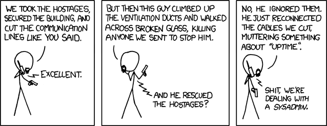

Working on a project with a team is a difficult task. If the project is not simple, you need to build it, test it and publish it and you can have multiple project with similar command but different parameters or path for build/test/stuff-making. Other times you can have a team of developer and the build/test/stuff-making will be done by THE sysadmin1.

From personal expirience if you don’t have a method for the build/deploy/test for the project at the first update will came Murphy and make you an unhappy soul or have some colligue with a battle axe asking for a little talk about the build/deploy/test.
For this reason I suggest a template for developing something into a git repo:
- Build script
- Documentation
- Testing
- Lint
Documentation
Not a full documentation, a basic one for rapid use. You need to have a full documentation of every project you will work and all you worked on sorted and updated at last version. In the git project is better to have a little README.md with the description of the project and one or two faq of the project.
In this way you will have allways have a cookbook for the everyday task.
Some git hosting like GitHub, GitLab and GitTea will show your README.md at the page of the project as HTML so it can be also a “What the f**k is this project” page.
Building script
Any project you have will be having a different set of config and command to launch every task. Sometime you will make one or more script for your task and you need to remember all of the function and launch command. So I write a makefile for all my project, personal and job related.
Base of makefile
For write a good makefile you only need to write some statement like this
|
|
You can have multiple “rule”, one for any task you need, and I suggest one with code and other generic:
|
|
This magical command2 will use all your comment inline with the _rule_for build a help command. .PHONY is a string you put for a “A phony target is one that is not really the name of a file; rather it is just a name for a recipe to be executed when you make an explicit request”, it is a string for not having conflicts.
Other _rule_I use are:
- install: setup the env for the project
- docs: build the docs of the project if there are inside the project
- run: run the env for the project
- test: launch the test for the project
This is a example of one of my project. You can see at the RUN rule you can follow the rule with other rule for run them before the rule in question.
|
|
So, every time you will use this makefile with run you will run install, docs and run in this sequence.
Force Testing
Testing is one of the must of programming. And it can be done only with scripting. The best way I found is using the makefile. Setting up a good testing suite with a full cover for the code is the base of a good project.
And a good way for testing is using some type of Continuous Integration like GitHub Action, Circle CI or Travis CI.
If you will use a CI with a git-flow’s flow you can make the tests' result blocking for merging branch.
Lint and reformatting
Lint or Linter3 is an obscure thing. And make the code look readble. So I use a lot of git hooks or pre-commit for linting or reformatting.
Git hooks
You can write a bash/python/perl/what_you_want with all the code you need to lint or reformatting but there are some problems:
- Is not inside the repo so is not versioned
- Is difficult to debug it
- You need to manual set it at the start of the dev, not easy to script for the setup of the project.
Pre-Commit
Pre commit is a framework for pre-commit hooks. It has a lot of hooks ready for lint and reformatting the code and, like the normal git hook, block the commit if the hook change something.
Also the command pre-commit run will run the pre-commit hooks without make a commit. Sometime is usefull
Conclusion
With this setup you can have a lot of automatic task for your project so you and your team will work better, more like a clock and without a lot of coordination if you can follow a standar template like this.
And you can leave and enter in any project in an easy and fast way.
-
Team and Sysadmin description from my expirience ↩︎
-
Taken from victoria.dev ↩︎
-
Lint is a static code analysis for finding bugs or other bad codes ↩︎
by Fundor333